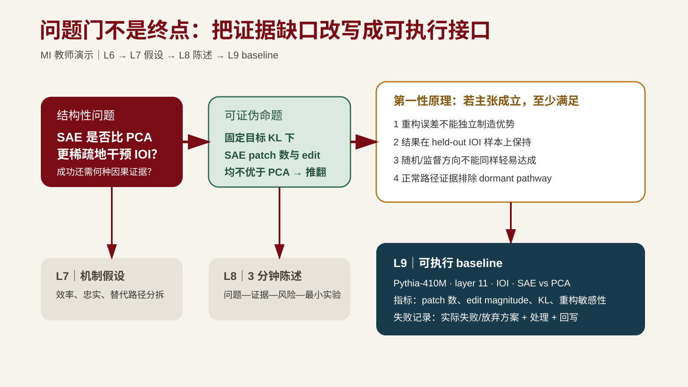

第六讲｜问题定义、第一性原理与问题门¶
导读¶
第 3-5 课完成了检索、精读和证据地图，产出了研究空白候选与候选题池初稿。但研究空白本身还不是研究问题。"还没有论文写过 X"只能说明地图上有一个空格，不说明这个空格值得填充、能否在课程周期内做出最小验证、以及填充后能回答什么。同样，候选题池里的候选也还不是选定的研究问题——它们需要在重要性、新颖性、可行性和兴趣四个维度上比较筛选。
本课对应八阶段研究链路的阶段一"问题定义"和阶段二"第一性原理分析"，是"文献、证据与问题"模块的末课，也是全课第一次正式提交——问题门。它的核心转换是：
从"还没有人做过"转向"在什么条件下、什么机制是否导致什么结果，什么观察会推翻它"。
完成本课后，你将提交问题门材料包，包含一个范围清楚、有非例、有可证伪命题的研究问题，和一份从基本约束推导出待验证前提的第一性原理推导。第 7 课将在这些问题上建立机制假设和实验设计。
案例边界：本讲“结构化阅读卡是否降低 AI 摘要限定条件遗漏率”的贯穿案例是课程虚构教学样例，用于演示问题重写、推导和门条件自查；它不对应真实论文、检索命中或实证结果。真实项目必须填写自己的检索记录与核验状态。
学习目标¶
完成本讲后，你应该能够：
- 区分主题、研究问题和待验证主张，并把宽泛兴趣改写为范围清楚、可证伪、周期可完成的研究问题；
- 用非例界定问题边界，说明什么不算本问题，防止项目随检索膨胀；
- 写出至少一个可证伪命题，指明什么观察结果会使当前主张不成立；
- 从基本约束、作用机制和不可违背条件推导待验证前提，并说明第一性原理分析的适用边界；
- 用"So what?"和"Who cares?"检查问题重要性，并交叉检查问题来源；
- 用意义、可行性和兴趣完成候选题取舍；如有依据，再记录问题新、视角新或方法新的线索；
- 对照问题门条件完成提交前自查。
一、从研究空白到结构性问题¶
1. 主题、问题与主张¶
第 1 课已经区分过报告与研究的差别，这里从问题形成角度再压缩一次：
| 层次 | 典型表述 | 缺什么 |
|---|---|---|
| 主题 | AI 辅助论文阅读 | 范围、条件、可比较对象 |
| 研究问题 | 在需要逐条核验引用的 CS 论文阅读任务中，结构化阅读卡是否降低 AI 摘要的限定条件遗漏率？ | 候选答案、可证伪性、可行性 |
| 待验证主张 | 在限定材料与同一评价口径下，阅读卡输出的限定条件遗漏率低于自由摘要；因果机制另需区分检验。 | 实验证据、竞争假设排除 |
来源参考：Booth, W. C. et al. The Craft of Research, 5th ed. University of Chicago Press, 2024. Chapter 1, "From Topics to Questions"。用途：把兴趣收敛为研究问题，并用 "So what?"、实际后果和知识后果检查重要性（见 reading-list.md 第 6 课）。
研究问题不是把主题缩小一点，而是把主题变成"什么条件下、什么对象、什么干预、什么结果、什么比较"的结构。缺少其中任何一项，综述和实验都无法定位。
2. 从研究空白到问题的转换¶
第 5 课识别了三类研究空白（冲突空白、缺角空白、新问题空白），并对每个候选执行了真实性、重要性和可行性三步检验。通过三步检验的空白候选进入本课，需要进一步改写为结构性问题。
转换的关键动作：
- 从"没人做过"到"在 X 条件下，Y 机制是否导致 Z"：把空格的描述改写为一个包含条件、机制和可观察结果的问题。
- 明确包含范围：问题适用于什么任务、什么材料、什么对象。
- 写出非例：明确什么不算本问题，防止边界漂移。
- 写出可证伪命题：指明什么观察结果会使主张不成立。
以虚构教学样例为例。第 5 课的缺角空白候选 G1 是：在样例相关工作矩阵中，"阅读卡是否强制定位原文"这一子问题整列空白，当前标为“待真实窄检索”，不预设命中数或结论。
本课把它改写为：
研究问题：在需要逐条核验引用的计算机论文阅读任务中，结构化阅读卡是否降低 AI 摘要的限定条件遗漏率？
包含范围：带引用的计算机领域论文阅读任务；AI 生成摘要；限定条件遗漏率作为指标。
非例：不比较不同大模型的通用写作质量，不评价综述是否具有语言美感，不处理需要专业实验设备的学科。
可证伪命题：如果加入结构化阅读卡后，限定条件遗漏率没有下降，或者人工核验成本显著增加且无法接受，则"阅读卡改善该科研动作"的主张不成立。
3. "So what?" 和 "Who cares?"¶
问题不止要清楚，还要重要。Booth 等人提出两个检查：
- "So what?"（知识后果）：如果这个问题不被回答，当前证据地图的哪条主张无法成立，或哪个机制假设无法被检验？如果回答了，研究者或实践者将能做什么之前做不到的事？
- "Who cares?"（实际后果）：谁会从答案中受益？是研究者、实践者还是决策者？受益的形式是什么？
来源参考：Booth et al. The Craft of Research, 5th ed., Chapter 2, "From Questions to a Problem"。用途：用实际后果和知识后果检查重要性，而非以"新颖"替代"重要"。
重要性来自问题在论证链上的位置，不是因为它"新"。第 5 课的三步检验已经做过一次重要性检查，这里从空白候选升级为问题后需要再确认一次：问题是否处于证据地图中某条关键论证链上？如果不回答它，哪些后续判断无法成立？
4. 问题来源交叉检查与候选题池比较¶
问题来源交叉检查。第 5 课 §四·1 给出了六条问题生成路径。收敛问题前先问：这个候选题从哪条路径来？如果它只来自文献空白，必须再回答一个问题：
如果文献里没有这个空白，这个问题还值得回答吗？
答得出，说明问题背后有更基本的观察、约束或实践需求，空白只是它的一个入口；答不出，说明它可能只是填格子，有两条出路：回到更基本的异常观察或约束重新推导问题，或者明示其重要性只在当前论证链内（这是合法的，但要写进重要性说明，不能冒充更广泛的意义）。
四维选题标准卡。候选题池里通常不止一个候选。用四个维度比较，而不是"哪个最先想到"：
| 维度 | 检查问题 | 依据 |
|---|---|---|
| 意义 | 不回答它，哪条论证链无法成立？谁受益？ | Booth"知识后果/实际后果"、Hamming"重要问题" |
| 新颖性 | 它在哪一类上是新的：问题新、视角新还是方法新？ | 见下方三类新颖性 |
| 可行性 | 课程周期内能否做出最小验证？需要什么材料、数据或设备？ | 第 5 课可行性检验 |
| 兴趣 | 你是否愿意在课程周期之外继续投入？判据是什么？ | 个人判据，记录理由即可 |
新颖性的三类正评。"新"不是"没人做过"的同义词，要说明新在哪一类：
- 问题新：提出一个此前没有被明确提出的问题；
- 视角新：对已知问题给出新的框架、机制解释或重新表述；
- 方法新：用新方法、新工具或新数据条件回答已有问题。
只有在有依据时，才在 problem-definition.md 记录属于哪一类；尚无明确新颖性判断不会阻断问题门。复现、负结果或边界澄清也可以成为合格课程项目，前提是问题重要、周期可行且可检验。四类检查里，意义与可行性优先于新颖性标签。
来源参考：Hamming, R. W. "You and Your Research." The Art of Doing Science and Engineering. Stripe Press, 2020 reissue. 本课只读"重要问题"和研究品味部分。用途：区分"可做""新颖"和"值得投入"的问题。
来源参考：胡晓峰：《浅谈科研课题中的"科学问题"》。本地副本（未公开；请查对应公开来源）。用途：识别把背景、意义、工程任务或"怎么做"误写成科学问题的情况（见 reading-list.md 第 6 课课堂案例）。
二、非例：问题边界的负定义¶
1. 什么是非例¶
非例说明"什么不算本问题"。它和"包含范围"一起构成问题的正负边界。非例的价值在于防止项目随检索不断膨胀：当你在搜索中看到一篇"似乎相关"的论文时，非例帮你判断它到底在不在问题范围内。
第 1 课已经给出了非例的基本概念，本课把它系统化：
- 明确不包含的范围：任务、材料、对象或指标中哪些不在本问题内。
- 容易混淆但实际不属于本问题的例子：指出那些看起来相关、实际不可比或不在范围内的方向。
- 与包含范围形成对照：让读者能从正反两侧判断一篇论文是否在范围内。
2. 非例的写法¶
一个好的非例不只是"不做 X"，还要说明为什么不算：
- 不可比的例子：使用了不同任务设置的研究，结论不能直接比较。
- 不同层面的例子：评价通用写作质量 vs. 评价限定条件准确性，不在同一层面。
- 超出周期的例子：需要专业实验设备或大规模数据采集的研究，超出课程周期。
以贯穿案例为例：
非例： - 不比较不同大模型的通用写作质量（不同层面）； - 不评价综述是否具有语言美感（不同指标）； - 不处理需要专业实验设备的学科（超出周期与范围）。
3. 非例的常见错误¶
| 错误类型 | 表现 | 后果 |
|---|---|---|
| 非例过宽 | "不做与本课题无关的研究" | 没有实质约束，任何方向都可以被说成"相关" |
| 非例过窄 | "不使用数据集 X" | 等同于排除某个数据集，而非界定问题边界 |
| 非例与可证伪命题矛盾 | 非例排除了检验条件 | 可证伪命题无法成立 |
| 非例只是否定清单 | "不评价文风、不比较模型、不做实验" | 否定了范围但没说清为什么不算 |
胡晓峰在《浅谈科研课题中的"科学问题"》中指出一种常见错误：把背景、意义或"怎么做"误写成科学问题。非例的作用之一就是把这些"看起来是问题但实际不是"的表述挡在问题定义之外。
三、可证伪命题¶
1. 什么是可证伪命题¶
一个命题可证伪，意味着能指出什么观察结果会使它不成立。可证伪不是"已经被证伪"，而是"原则上可以被推翻"。
不可证伪的表述例子：
结构化阅读卡是有用的。
"有用"无法被推翻，因为没有指明什么指标、什么对照、什么阈值。改进为：
在需要逐条核验引用的计算机论文阅读任务中，使用结构化阅读卡的 AI 摘要相比自由摘要，限定条件遗漏率更低。
这个命题可以被推翻：若组间差异的估计与不确定性排除了预先界定的有意义改善，结果命题受到反驳；精度不足则仍不能判断。人工核验成本不可接受影响采用决定，需要单独测量和记录，不自动推翻“遗漏减少”。
2. 可证伪命题的写法¶
一个完整的可证伪命题至少包含：
- 条件：在什么任务、什么材料、什么设置下；
- 干预：什么方法或机制被引入；
- 结果：什么指标被测量；
- 对照：与什么基线比较；
- 推翻条件：什么观察结果会使主张不成立。
检查清单：
- 指明条件、对象、干预、结果了吗？
- 有明确对照吗？
- 能指出什么观察结果会推翻当前主张吗？
- 是否避免了"是否有效"这类无法证伪的表述？
来源参考：Platt, J. R. "Strong Inference." Science 146(3642), 347-353 (1964). DOI: 10.1126/science.146.3642.347。用途：用竞争假设、关键实验和排除逻辑形成可证伪命题（见 reading-list.md 第 6 课）。
3. 给第 7 课留下替代解释标记¶
Platt 的"强推断"方法要求为同一问题比较竞争解释，并设计可区分它们的检验。本课不展开完整竞争假设和实验设计，只在问题定义旁留下一个替代解释标记：
- 当前主张的替代解释是什么？
- 如果这个解释也成立，当前可证伪命题是否仍足以支持原主张？
以贯穿案例为例：
- 当前解释：生成时显式列出限定条件，可能促使输出保留更多条件；这一机制候选仍需区分性检验。
- 替代解释标记：评价者看到阅读卡字段提示后更容易标出限定条件，表面差异可能来自标注提示，而非摘要本身保留得更多。
把这条标记作为第 7 课的输入即可。第 7 课再正式编号 Q1、H1/A2 与 A1/A3 检查，并设计可区分结果；本课不提前完成那一讲的工作。
四、第一性原理推导¶
1. 什么是第一性原理分析¶
第一性原理分析指识别问题的基本约束、作用机制和不可违背条件，并由此推导待验证前提。它不是脱离文献、数据和既有工作的通用捷径；推导结果必须继续接受外部证据检验。
课程定位见 备课规划.md（未公开；请查对应公开来源） 执行原则 9："第一性原理分析"只指识别问题的基本约束、作用机制和不可违背条件，并由此推导待验证前提；它不是脱离文献、数据和既有工作的通用捷径，推导结果必须继续接受外部证据检验。
证据标准见 AGENTS.md（未公开；请查对应公开来源）：AI 输出本身不构成证据。第一性原理推导的结论同样需要回到文献、数据或实验中检验。
2. 推导步骤¶
第一性原理推导分四步：
步骤一：识别基本约束
基本约束是问题成立所依赖的必要条件，来自任务本身而非当前工具。问：如果主张成立，哪些条件必须满足？
步骤二：识别作用机制
作用机制回答"为什么预期结果会发生"，指向中间过程而非最终指标。问：干预通过什么过程产生预期结果？
步骤三：识别不可违背条件
不可违背条件是比较公平性、可复现性和评价一致性的底线。问：哪些变量必须保持一致，比较才公平？哪个最简单的反例足以推翻当前解释？
步骤四：推导待验证前提
从前三步推出可以检验的前提。问：如果以上约束、机制和条件成立，我们可以检验什么具体前提？
输出通常是一份必要条件、关键约束和可检验前提清单。
3. 适用边界¶
第一性原理分析在本课程中有明确适用边界：
- 不替代文献检索：推导出的前提必须回到第 3-5 课的文献和证据地图中检验是否已有支持或反驳。
- 不脱离既有工作：推导不是从零开始发明问题，而是在已有证据地图和研究空白的基础上深入。
- 不自动成立：推导结果只是"如果这些条件成立，那么……"，不等于已经证明。推导出的前提进入第 7 课的机制假设，再进入第 9 课的实验规格接受检验。
- 不追求穷举：课程项目只需推导与当前问题直接相关的必要条件和关键约束，不需要构造完整公理体系。
4. 示例（贯穿案例）¶
问题：在需要逐条核验引用的计算机论文阅读任务中，结构化阅读卡是否降低 AI 摘要的限定条件遗漏率？
步骤一：基本约束
- 每条关键主张能够指向具体来源位置（原文页码、章节或图表）；
- 来源中确实存在支持该主张的内容（不是模型新增或外推）；
- 核验者能够区分原文主张、合理推断和模型新增内容；
- 对照流程与工作流使用相同材料和相同评价标准。
步骤二：作用机制
阅读卡强制分别记录任务、设置、结果和局限，使每条主张在生成时绑定来源位置，从而减少把局部结论写成普遍结论、把模型推断误写成原文结论的情况。
步骤三：不可违背条件
- 两种流程（阅读卡 vs. 自由摘要）使用相同论文集合和相同模型；
- 评价者使用固定 rubric，且不知道生成条件（盲评）；
- "遗漏"有操作性定义（如"限定条件字段缺失率"），不是主观印象；
- 评价者间一致性可被检查。
步骤四：待验证前提
如果阅读卡强制定位原文（约束 1-3），且对照流程使用相同材料和评价标准（约束 4），则可据此定义限定条件遗漏率，并提出结构可能影响保留的机制候选；差异能否归因于该机制，还需处理生成步骤、评价提示和其他混杂，接受区分性检验。
这些条件比"使用某个模型""安装某个 Skill"更稳定。工具可以替换，但如果来源无法定位或评价标准在实验过程中变化，结论仍然不成立。
这些待验证前提将在第 7 课成为机制假设的输入，在第 9 课成为实验规格的设计依据。
五、问题门提交清单¶
问题门是全课第一次正式提交。门条件以 assignments.md Checkpoint 1 为权威来源，本节只做面向学生的自查清单，不另立规则。
1. 提交方式¶
提交一个指向当前个人项目版本的链接、tag 或压缩包，不重复制作与项目仓库分离的汇报文档。第 1-6 课所有课堂练习和阅读记录都已回写同一项目，问题门检查的是当前版本是否满足条件，不是重新制作材料。
2. 第 3-6 课如何累计到问题门阈值¶
课堂最低产出只证明学生跑通了方法，不自动等于已达到问题门数量。第 3-5 课的产出在同一个人项目中持续扩展，到第 6 课才与问题定义一起统一提交。
| 时点 | 课堂最低产出 | 课后补全 | 预计课后投入 | 回写位置 | 研究门边界 |
|---|---|---|---|---|---|
| 第 3 课 | 1 条可复盘检索记录 + 2 条来源审计 + 至少 1 条 verified 或带限制的候选文献 |
复用同一检索式和纳入/排除条件，把候选表扩展到至少 6 篇 | 20-30 分钟 | notes/literature-search.md 或 evidence-map.md 的候选表 |
不单独提交；第 6 课问题门统一检查 |
| 第 4 课 | 1 张完整精读卡 + 1 条偏差审计 + 1 条 AI 使用记录 | 对候选表中另外 2 篇核心材料重复完整流程，累计到至少 3 张完整精读卡 | 60-80 分钟（每张 30-40 分钟） | notes/reading-cards/ |
不单独提交；第 5 课用于建图，第 6 课统一检查 |
| 第 5 课 | 相关工作矩阵初版 + 证据地图初版 + 空白候选 + 候选题当堂记录 | 根据地图的空白和引用路径做窄检索，把已核验候选表从至少 6 篇扩展到至少 10 篇，并补齐 3 张精读卡的缺失字段；补齐 ≥3 候选题池（≥2 条生成路径、≥1 个非文献空白路径） | 30-45 分钟 | notes/literature-search.md + notes/reading-cards/ + evidence-map.md |
不单独提交；作为第 6 课入口状态 |
| 第 6 课 | 选定一个候选题，写清边界、一个可证伪命题、一个待验证前提和一个替代解释标记；九项门条件标注状态 | 只补自查中的缺口，不重做已通过的工件 | 按缺口而定 | problem-definition.md + failure-log.md + 上述持续工件 |
课后提交一次问题门材料包；完整竞争假设设计进入第 7 课 |
上表中的“项目推进”不是新的每周正式作业，不单独计分、不单独提交。它是把已在课堂跑通的方法继续用于同一个人项目，并在第 6 课问题门一次检查。
本课课堂最低产出用于证明学生能完成一次问题收敛，不等于九项问题门条件全部通过。课后只补缺口；正式问题门仍按下节九项条件检查，且不新增提交物。
如使用 AI 辅助阅读，每张精读卡都须保留 AI 初始阅读地图、至少两个原文核验位置和最终人工判断。偏差记录有两条同样合法的路径：发现明显问题时，记录 AI 的错误、过度概括或遗漏；未发现明显问题时，记录已检查的风险点、原文位置和核验依据。不得为了“完成偏差字段”虚构 AI 错误。
3. 门条件自查清单¶
以下 9 项与 assignments.md Checkpoint 1 门条件一一对应，请逐项自查：
| 序号 | 门条件 | 自查问题 | 对应项目文件 |
|---|---|---|---|
| 1 | 至少 10 篇候选文献或等价外部材料，并标注证据角色 | 候选文献表是否含 10 篇以上？每篇的证据角色和核验状态是否清楚？ | notes/literature-search.md 或候选文献表 |
| 2 | 至少 3 篇核心材料的完整精读卡 | 是否有 3 张以上完整精读卡？每张是否记录了正式书目信息、作者主张、关键证据及原文位置、实验设置或论证前提、适用范围和局限？ | notes/reading-cards/ |
| 3 | 使用 AI 辅助阅读时，精读卡包含 AI 初始阅读地图、至少两个原文核验位置、AI 的错误/过度概括/遗漏或已检查风险，以及最终人工判断 | 每张精读卡是否保留了未核验的 AI 初始地图和至少两个原文位置？若发现问题，是否记录错误/过度概括/遗漏？若未发现问题，是否记录已检查风险及核验依据？是否有最终人工判断？ | notes/reading-cards/ |
| 4 | 一个证据地图初版，能够区分直接证据、补充证据、冲突和空白 | 证据地图是否明确标注直接证据、补充证据、冲突和空白？冲突是否被显式保留？ | evidence-map.md |
| 5 | 一个明确的研究问题，包含范围、非例和至少一个可证伪命题 | 研究问题是否具体到条件、对象、干预和结果？是否写出至少一个非例？是否写出至少一个可证伪命题（指明什么观察会推翻它）？ | problem-definition.md |
| 6 | 一份第一性原理推导，写出必要条件、关键约束或可检验前提 | 是否完成四步推导（基本约束、作用机制、不可违背条件、待验证前提）？推导是否在文献和证据地图基础上进行，而非凭空构造？ | problem-definition.md 的“第一性原理分析（课程扩展）”小节 |
| 7 | 说明问题的重要性以及为什么适合课程周期 | 是否用"So what?"和"Who cares?"检查了重要性？是否说明课程周期内能完成最小验证？ | problem-definition.md |
| 8 | 至少一条研究推进中的失败或死路，写明原因、处理方式和回写位置 | 是否记录了无结果检索、被排除方向或被放弃问题版本中的至少一种？是否真实回写到研究工件？ | failure-log.md + 对应工件 |
| 9 | AI 辅助检索、阅读和问题改写已记录来源与人工核验方式；AI 生成的书目信息、页码、DOI 和引文已回到正式来源核对 | AI 使用记录是否包含用途、Context、输出用途、人工核验方式？AI 生成的书目、页码、DOI 是否已逐项回源核验？ | ai-usage-log.md |
failure-log.md 在问题门首次成为必查工件：如果第 1-5 课还没有建过它，现在在个人项目中创建，空表见早期研究脚手架 §7 轻量失败记录。
4. 问题定义文件字段¶
problem-definition.md 应至少包含以下字段。其中“第一性原理分析”是本课对 starter-template.md §3 的课程扩展小节；不新建一份与个人项目分离的汇报文档：
一句话研究问题：
> 我们研究在 ______ 条件下，______ 方法/机制是否能改善/解释 ______。
研究范围：
- 包含什么：
- 暂不包含什么：
- 一个明确非例：
- 一个可证伪命题：
第一性原理分析（课程扩展）：
- 基本约束：
- 作用机制：
- 不可违背条件：
- 待验证前提：
问题重要性：
- 知识后果（So what?）：
- 实际后果（Who cares?）：
- 课程周期可行性：
候选题池与选题理由（课程扩展）：
- 候选题 ≥3 个：每个一句话表述 + 生成路径标签 + 当前证据；
- 四维比较（意义/新颖性/可行性/兴趣）与选定理由；其中意义与可行性是取舍依据；
- 如有依据，记录可能的新颖性类别及待核验状态；尚无明确类别不阻断问题门；
- 问题来源交叉检查：若来自文献空白，"没有这个空白还值得回答吗"的答案。
5. 未通过时¶
未通过时，回到文献、证据或问题定义环节修改，一周内重新检查。第一次未通过不直接扣重分，但未按期修订会影响对应评分维度（见 assessment.md "文献与问题定位"维度，占 25%）。
门未通过时只要求修复缺失条件并重新检查，不重复提交无关材料。根因定位示例：
- 缺少直接证据：回到第 3-4 课的检索和精读环节；
- 问题过大：回到本课的问题重写和非例；
- 非例与可证伪命题矛盾：回到本课的非例写法检查；
- 第一性原理脱离文献：回到证据地图，确认推导基于已核验材料。
六、常见错误¶
- 主题当问题：把"AI 辅助论文阅读"当作研究问题，缺少条件、对象、干预和结果。应改写为结构性问题。
- 非例过宽：写成"不做无关研究"，没有实质约束。非例应指明具体不可比或不在范围内的方向。
- 可证伪命题写成"是否有效"：没有指明对照、指标和推翻条件。应写出完整条件-干预-结果-对照-推翻结构。
- 第一性原理脱离文献：推导不从证据地图出发，凭空构造前提。应回到第 5 课证据地图，确认推导基于已核验材料。
- 问题超出课程周期：需要大规模数据采集或专业实验设备的研究不适合 32 学时课程。应缩小范围或限定为公开、可获取的材料。
- 忽略重要性检验：只检查问题"新不新"，不检查"回答了它之后能做什么之前做不到的事"。应用"So what?"和"Who cares?"。
- AI 改写未经核验直接进入问题门材料：AI 生成的研究问题表述、书目信息和引文未回到原文和正式来源核验。应执行来源审计。
- 把工程任务当科学问题：把"怎么做 X"写成研究问题，而非"X 是否导致 Y"。胡晓峰的案例用于识别这类错误。
- 问题来源只有文献空白：候选题全部来自"关键词 → 找论文 → 找空白"，没有异常观察、实践痛点或第一性原理反推的候选。应补齐非文献路径候选，并执行 §一·4 的问题来源交叉检查。
七、贯穿案例：从研究空白到问题门材料¶
承接第 5 课虚构教学样例。第 5 课样例状态：证据地图初版 + 研究空白候选 G1（缺角空白：阅读卡是否强制定位原文→降低遗漏；真实性仍待真实窄检索，重要性与可行性只作课堂演示）。
本课动作链：
第一步：候选题比较与从 G1 改写为结构性问题
先用四维选题标准卡比较候选题池（均为虚构教学样例）：
| 候选 | 生成路径 | 意义 | 新颖性 | 可行性 | 兴趣 | 处理 |
|---|---|---|---|---|---|---|
| G1：阅读卡是否降低 AI 摘要限定条件遗漏率 | 文献缺角空白 | 位于论证链关键位置 | 待核验 | 同一批论文 + 固定 rubric 可行 | 与本人项目一致 | 选定 |
| C2：AI 摘要遗漏是否集中在跨论文比较处 | 异常观察（样例构造） | 若成立可解释部分遗漏来源 | 待核验 | 需要更大标注样本，周期内只能做初步 | 中等 | 保留为背景问题 |
| C3：把引用核验方法迁移到代码审查场景 | 重构/迁移 | 实践意义强 | 可能是方法迁移，待核验 | 需要新任务语料，超出周期 | 高 | 淘汰（可行性） |
选定 G1 后改写为结构性问题。
研究问题：在需要逐条核验引用的计算机论文阅读任务中，结构化阅读卡是否降低 AI 摘要的限定条件遗漏率？
第二步：写出非例
- 不比较不同大模型的通用写作质量（不同层面）；
- 不评价综述是否具有语言美感（不同指标）；
- 不处理需要专业实验设备的学科（超出周期与范围）。
第三步：写出可证伪命题
如果加入结构化阅读卡后，限定条件遗漏率没有下降，或者人工核验成本显著增加且无法接受，则"阅读卡改善该科研动作"的主张不成立。
第四步：第一性原理推导
（见 §四·4 示例，完成四步推导。）
第五步：重要性说明
- 知识后果（So what?）：如果不回答这个问题，证据地图中"阅读卡强制定位原文→降低遗漏"的机制假设无法被直接检验；第 5 课的缺角空白 G1 位于论证链的关键位置。
- 实际后果（Who cares?）：需要用 AI 辅助文献综述的研究者可以从答案中判断是否引入阅读卡结构，以及在什么任务中它不适用。
- 课程周期可行性：使用同一批 CS 论文、固定模型和 rubric，人工基准标注限定条件遗漏——在课程周期内可形成最小验证；样本量与运行次数在第 9 课实验规格中锁定。
第六步：问题门材料自查
对照 §五·3 的 9 项门条件逐项自查。确认：候选文献 ≥ 10 篇和精读卡 ≥ 3 张是第 3-5 课累计结果；证据地图初版由第 5 课建立并继续补全；研究问题、非例、可证伪命题、第一性原理和重要性由本课回写；至少一条真实失败/死路写入 failure-log.md 并回写对应工件；AI 使用记录在第 1-6 课持续更新。
第七步：提交
提交指向当前个人项目版本的链接或 tag，不重复制作汇报文档。
本课不要求在课堂内完成全部自查，只要求跑通一次"研究空白 → 结构性问题 → 非例 → 可证伪命题 → 第一性原理 → 重要性 → 自查"的链路，并产出 problem-definition.md 和第一性原理推导初版。
课后迁移阅读：MI 问题门如何生成 baseline¶
完整问题定义见 mi-problem-definition-demo.md。它把第 5 课“patching success 不等于 causal faithfulness”的证据缺口拆成三个命题：效率 H-eff、稳健性 H-rob 和忠实性 H-faith，并明确非例、推翻条件和五项必要条件。该材料只用于课后迁移练习，不在课堂展开，也不作为第 7–9 课的贯穿案例或必备输入。

图注：课程自绘迁移示例，不表示实验已运行，也不替代阅读卡贯穿案例。来源与许可见 assets/README.md（未公开；请查对应公开来源）。
该示例的失败记录是：初版问题“SAE 是否因果忠实”把 C02 的 intervention efficiency 过度概括为机制结论；经 C16/C31 核验后拆成三条命题，并把状态从可能的 stable 降为 review。处理结果分别回写到问题定义、证据地图和 L9 对照。它只作课后迁移示范；问题门仍检查本人实际遇到的失败或放弃记录及处理。
八、课堂练习¶
练习 1：主题、问题还是主张¶
判断以下表述属于主题、研究问题还是待验证主张，并说明缺失信息：
- AI 与科研效率。
- 检索增强生成能否减少医学问答中的事实错误？
- 使用更多文献一定能提高综述质量。
- 在固定来源集合和相同模型条件下，逐条引用核验是否降低主张-来源错配率？
参考判断：
- 1 是主题；
- 2 接近研究问题，但仍需明确场景、指标和比较条件；
- 3 是过强的待验证主张，需要定义"更多"和"质量"并考虑反例；
- 4 是相对可操作的研究问题。
练习 2：候选题生成与四维比较¶
- 写下你科研经历中的一个异常观察或实践痛点（期望与实际不符、反复踩到的坑）；用第 5 课证据地图或一次窄检索检验它是否已被解释，并把它改写为一个候选题（问题表述 + 生成路径标签）。
- 把它与你的文献空白候选一起放入候选题池，用四维选题标准卡（意义、新颖性、可行性、兴趣）比较，写出选定哪个、为什么。新颖性只在有依据时记录类别和待核验状态，不作为淘汰硬门。
练习 3：写出非例¶
为自己的研究兴趣写出：
- 一个包含范围；
- 一个明确不包含范围；
- 一个容易混淆但实际上不属于本问题的非例，并说明为什么不算。
如果无法写出非例，通常说明问题仍然过宽。
练习 4：改写可证伪命题¶
把以下不可证伪表述改写为可证伪命题：
结构化阅读卡是有用的。
改写后至少包含条件、干预、结果、对照和推翻条件。
练习 5：第一性原理推导¶
为自己的研究问题完成四步推导：基本约束、作用机制、不可违背条件、待验证前提。检查推导是否基于第 5 课的证据地图，而非凭空构造。
练习 6：替代解释交接¶
为自己的研究问题写出一个最可能的替代解释，并说明它为什么会削弱当前主张。先把它作为交给第 7 课的标记，不在本课设计完整区分实验。
练习 7：问题门材料自查¶
对照 §五·3 的 9 项门条件，逐项自查当前项目版本。标注已满足、待补全和未满足的条目，并写出未满足条目的修复计划。
九、术语表¶
| 术语 | 本课程中的含义 |
|---|---|
| 研究问题 | 包含条件、对象、干预、结果和比较的结构性问题，原则上可被证伪 |
| 主题 | 宽泛研究方向，缺少条件、可比较对象和可证伪性 |
| 待验证主张 | 对研究问题的候选答案，需要实验或证据支持/反驳 |
| 非例 | 明确说明"不算本问题"的边界，防止项目随检索膨胀 |
| 可证伪命题 | 能指明什么观察结果会使主张不成立的命题 |
| 竞争假设 | 对同一问题的替代解释，可用关键实验区分 |
| 第一性原理分析 | 识别基本约束、作用机制和不可违背条件，推导待验证前提 |
| 基本约束 | 问题成立所依赖的必要条件，来自任务本身而非当前工具 |
| 作用机制 | 干预通过什么中间过程产生预期结果 |
| 不可违背条件 | 比较公平性、可复现性和评价一致性的底线 |
| 待验证前提 | 从基本约束和不可违背条件推出的可检验前提 |
| 问题门 | 第 6 课后的第一次正式提交，检查问题是否值得问、问得清、做得完 |
| So what? | 知识后果检查：如果不回答这个问题，哪条论证链无法成立 |
| Who cares? | 实际后果检查：谁会从答案中受益，受益形式是什么 |
| 候选题池 | 第 5 课起集中多条生成路径候选题的清单；≥3 个候选题、覆盖 ≥2 条路径、含 ≥1 个非文献空白路径候选，本课比较筛选 |
| 四维选题标准卡 | 意义、新颖性、可行性、兴趣四维比较候选题并记录选题理由的工件 |
| 新颖性三类 | 问题新（新问题）、视角新（新框架或重新表述）、方法新（新方法/工具/数据条件）；"新"不等于"没人做过" |
| 问题来源交叉检查 | 对纯文献空白来源的问题追问"没有这个空白还值得回答吗"，以区分真问题与填格子 |
十、延伸阅读与课程材料¶
课程内材料：
- 课程大纲
- 备课规划（未公开；请查对应公开来源） 第 6 课
- 逐课阅读清单 第 6 课
- 早期研究脚手架（
problem-definition.md字段模板） - 项目里程碑与研究门（问题门权威条件）
- 考核方案（"文献与问题定位"维度，25%）
正式书目（见 reading-list.md 第 6 课）：
- Booth, W. C. et al. The Craft of Research, 5th ed. University of Chicago Press, 2024. 选读 Chapter 1, "From Topics to Questions" 和 Chapter 2, "From Questions to a Problem"。出版社页面。用途：把兴趣收敛为研究问题，并用 "So what?"、实际后果和知识后果检查重要性。核心阅读，约 35 分钟。
- Platt, J. R. "Strong Inference." Science 146(3642), 347-353 (1964). DOI: 10.1126/science.146.3642.347。用途：用竞争假设、关键实验和排除逻辑形成可证伪命题。任选，约 25 分钟。
- Hamming, R. W. "You and Your Research." The Art of Doing Science and Engineering. Stripe Press, 2020 reissue. 选读"重要问题"和研究品味部分。出版社页面。用途：区分"可做""新颖"和"值得投入"的问题。任选，约 15 分钟。
课堂案例：
- 胡晓峰：《浅谈科研课题中的"科学问题"》。本地副本（未公开；请查对应公开来源）。用途：识别把背景、意义、工程任务或"怎么做"误写成科学问题的情况。
- 霍强：《讲堂 | 霍强：创新研究到底怎么做？》。本地副本（未公开；请查对应公开来源）。用途：选题的"Start with why"与 Passion/Excellence/Impact 三标准，作四维选题标准卡的兴趣与意义维度参照；不替代论证链位置的重要性检查。任选，约 15 分钟。
课后阅读采用"AI 导航 → 原文核验 → AI 质疑 → 偏差审计 → 人工定稿"流程。本课核心阅读为 Booth et al. Chapter 1-2，约 35 分钟。精读卡持续保存在个人项目 notes/，不逐周正式提交，问题门统一检查至少 3 张与个人项目直接相关的完整精读卡。